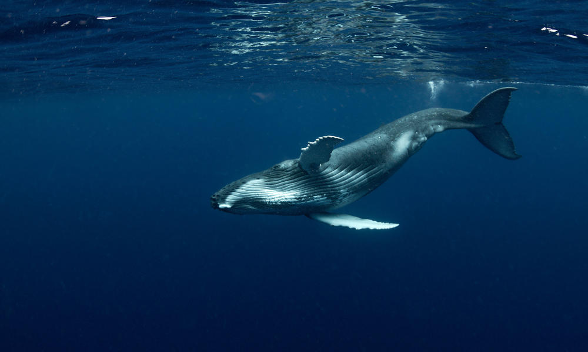
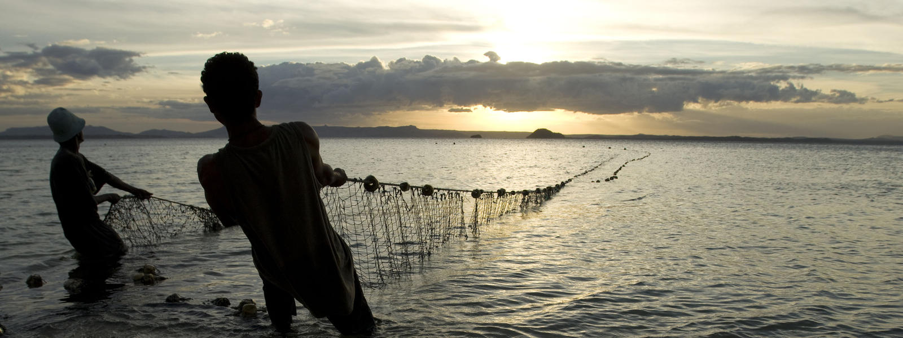

Ocean Protection
Life began in the oceans. They are home to an estimated two million species, from the largest animal that has ever lived to the tiniest bacteria. Marine biodiversity far outweighs that on land. New species are found all the time, as scientists estimate that 91% of marine species have yet to be discovered, catalogued or described.
Covering 71% of our planet's surface, oceans have shaped human history, culture and lives, and continue to do so. They are a life-support system for Earth and a global commons that provide us with free goods and services, from the food we eat to more than half of the oxygen we breathe. They are the foundation to the planetary water cycle that produces rain and snow; and are a source of food, feeding more than 1 billion people with their primary source of animal protein.
The oceans also regulate the global climate; mediate temperature, and drive the weather, determining rainfall, droughts and floods. They are the worlds' largest store of carbon where an estimated 83% of the global carbon cycle is circulated through marine waters.
WWF's oceans work focuses on healthy and resilient marine ecosystems that support abundant biodiversity, sustainable livelihoods, and thriving economies.
For four decades, WWF has been part of the movement to fight this global crisis. Our vision is a world powered by renewable energy, where communities and ecosystems are resilient in the face of climate changes. We engage millions of Americans, leading businesses and government leaders to realize this future. Preparing local communities, helping ecosystems adapt to rapid change, and reducing the emissions that drive climate change are critical to a safer world for ourselves, our children and the rest of life on Earth.
A LIVING BLUE PLANET

TOceans contain the greatest diversity of life on Earth, from the freezing polar regions to the warm waters of the tropics. Unfortunately, the biggest drivers of change in our oceans are the removal of living resources from the ocean; the conversion, loss, degradation and alteration of the physical habitats that make up the ocean ecosystem; and the many pollutants entering the ocean from a of myriad sources.
HEALTHY COMMUNITIES
Oceans act as a life-support system for people around the world, providing us with free goods and services, from the food we eat to the oxygen we breathe. But oceans are downstream from everywhere on the planet, and are subject to the collective footprint of more than seven billion people. In the last four decades populations of marine mammals, birds, reptiles and fish have declined on average by half, with some dropping by nearly 75%.
CARBON SINKS
Oceans are the world's largest store of carbon, where an estimated 83% of the global carbon cycle is circulated through marine waters. The global climate and our oceans are responding to decades of increasing carbon emissions. There is no place on earth this is more evident than in the Arctic, where the effects of the changing climate are unprecedented. The most drastic result is the shrinking sea ice, where the Arctic Ocean is projected to be nearly ice-free in the summer by 2050. This impacts species that rely on the ecosystems that are both visible and invisible, but critical as a source of food and for breeding.